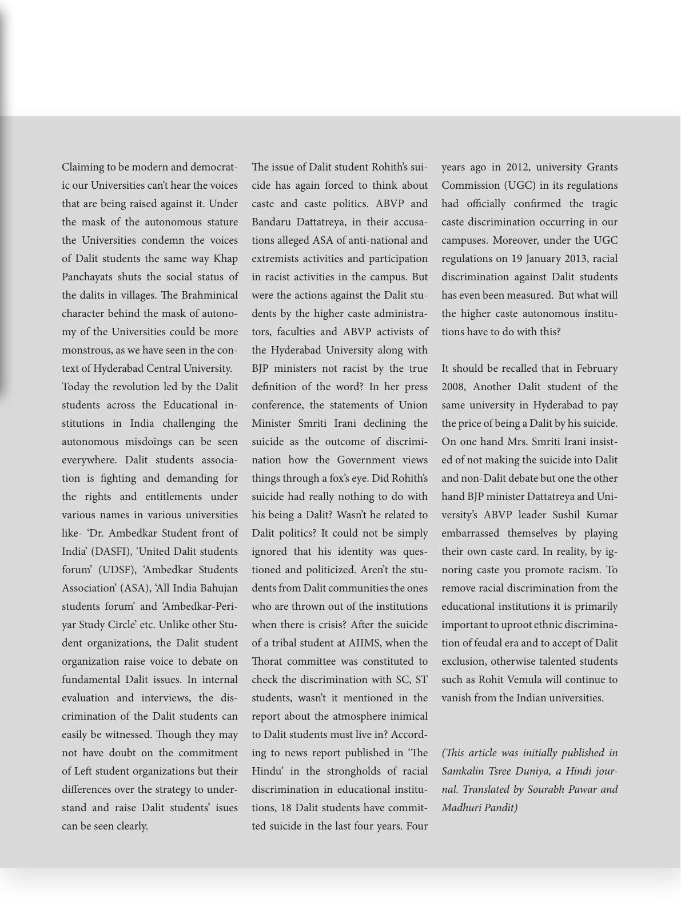

Claiming to be modern and democrat-
ic our Universities can’t hear the voices
that are being raised against it. Under
the mask of the autonomous stature
the Universities condemn the voices
of Dalit students the same way Khap
Panchayats shuts the social status of
the dalits in villages. e Brahminical
character behind the mask of autono-
my of the Universities could be more
monstrous, as we have seen in the con-
text of Hyderabad Central University.
Today the revolution led by the Dalit
students across the Educational in-
stitutions in India challenging the
autonomous misdoings can be seen
everywhere. Dalit students associa-
tion is ghting and demanding for
the rights and entitlements under
various names in various universities
like- ‘Dr. Ambedkar Student front of
India’ (DASFI), ‘United Dalit students
forum’ (UDSF), ‘Ambedkar Students
Association’ (ASA), ‘All India Bahujan
students forum’ and ‘Ambedkar-Peri-
yar Study Circle’ etc. Unlike other Stu-
dent organizations, the Dalit student
organization raise voice to debate on
fundamental Dalit issues. In internal
evaluation and interviews, the dis-
crimination of the Dalit students can
easily be witnessed. ough they may
not have doubt on the commitment
of Le student organizations but their
dierences over the strategy to under-
stand and raise Dalit students’ isues
can be seen clearly.
e issue of Dalit student Rohith’s sui-
cide has again forced to think about
caste and caste politics. ABVP and
Bandaru Dattatreya, in their accusa-
tions alleged ASA of anti-national and
extremists activities and participation
in racist activities in the campus. But
were the actions against the Dalit stu-
dents by the higher caste administra-
tors, faculties and ABVP activists of
the Hyderabad University along with
BJP ministers not racist by the true
denition of the word? In her press
conference, the statements of Union
Minister Smriti Irani declining the
suicide as the outcome of discrimi-
nation how the Government views
things through a fox’s eye. Did Rohith’s
suicide had really nothing to do with
his being a Dalit? Wasn’t he related to
Dalit politics? It could not be simply
ignored that his identity was ques-
tioned and politicized. Aren’t the stu-
dents from Dalit communities the ones
who are thrown out of the institutions
when there is crisis? Aer the suicide
of a tribal student at AIIMS, when the
orat committee was constituted to
check the discrimination with SC, ST
students, wasn’t it mentioned in the
report about the atmosphere inimical
to Dalit students must live in? Accord-
ing to news report published in ‘e
Hindu’ in the strongholds of racial
discrimination in educational institu-
tions, 18 Dalit students have commit-
ted suicide in the last four years. Four
years ago in 2012, university Grants
Commission (UGC) in its regulations
had ocially conrmed the tragic
caste discrimination occurring in our
campuses. Moreover, under the UGC
regulations on 19 January 2013, racial
discrimination against Dalit students
has even been measured. But what will
the higher caste autonomous institu-
tions have to do with this?
It should be recalled that in February
2008, Another Dalit student of the
same university in Hyderabad to pay
the price of being a Dalit by his suicide.
On one hand Mrs. Smriti Irani insist-
ed of not making the suicide into Dalit
and non-Dalit debate but one the other
hand BJP minister Dattatreya and Uni-
versity’s ABVP leader Sushil Kumar
embarrassed themselves by playing
their own caste card. In reality, by ig-
noring caste you promote racism. To
remove racial discrimination from the
educational institutions it is primarily
important to uproot ethnic discrimina-
tion of feudal era and to accept of Dalit
exclusion, otherwise talented students
such as Rohit Vemula will continue to
vanish from the Indian universities.
(is article was initially published in
Samkalin Tsree Duniya, a Hindi jour-
nal. Translated by Sourabh Pawar and
Madhuri Pandit)